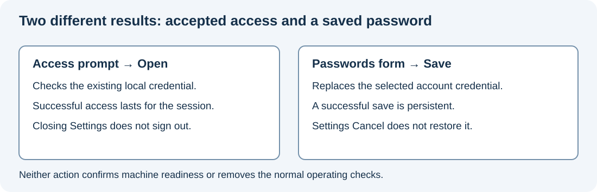

RADONIX · ROUTERXYZ+TC · CHAPTER 25
Operator Manual · English · 9 October 2026
Passwords and Access Levels
Recognize the access prompt, use the correct account and understand which changes remain after a window closes.
Expanded draft for review. Procedures describe the reviewed application. Obtain credentials and authorization from the person responsible for your machine.
25.1 Separate permission, machine readiness and password accounts
A password allows the application to check whether you may use a protected level of access. It does not tell the machine that its tool is correct, its workpiece is clamped or its movement path is clear. After a password is accepted, all the normal checks for the operation still matter. Think of access as permission to request an action, not proof that the action is ready to run.
The application uses two local access accounts, Operator and Engineering. Local means that their login checks belong to the application settings on the computer. The separate Manufacturer password is associated with the authenticated controller board and is used for board-related password preparation or replacement. Do not treat these three names as three interchangeable answers to every password prompt.
| Name | Where encountered | Purpose |
|---|---|---|
| Operator | Operator access prompt; Account list in Passwords | Admission to ordinary application operation when its password is configured. |
| Engineering | Engineering access prompt before Configuration; Account list in Passwords | Additional settings access after Operator access has been accepted. |
| Manufacturer | Account list and board-related password preparation | A separate board credential; not a universal local-login password. |
Why one screen is editable and another is not
A setting can be visible but read-only, hidden at your access level, or temporarily unavailable because of machine state. A live indicator may always be read-only because its purpose is to show a measured or reported value. None of these conditions automatically means your password was rejected.
For example, the I/O mapping fields discussed in Chapter 23 remain unavailable for editing during an online controller session. Higher access does not remove that offline requirement. A command can also require homing, an idle machine or a valid program. First read the description and status; ask for a higher access level only when the task actually requires it.
No prompt can be an intentional configuration
If a local account has no configured password, the application accepts that account automatically. An unconfigured Operator account therefore does not show the same startup barrier as a configured one. If Engineering is unconfigured, its access is accepted after Operator admission. This is why two installations can behave differently even when both run the same interface.
The absence of a prompt does not demonstrate that someone has just authenticated. Likewise, an editable field is not permission from the machine owner to change its commissioned value. Follow the agreed responsibilities for operation, setup and maintenance. This chapter explains the interface so that an operator can identify the required step and report a problem without needing to understand software administration.
Read Chapter 21 alongside this chapter for ordinary Configuration edits. Keep password changes separate in your mind: they use their own Save action and have a different persistence behavior from a normal parameter edit.
25.2 Respond to Operator and Engineering access prompts
When the application starts, it checks whether Operator access has already been admitted for the new session or whether that local account is unconfigured. If a configured Operator password is required, the Operator access window appears. Its message is Enter password to operate. Close for read-only access. Read the title before entering a password: this prompt checks the Operator account specifically.
Entering Operator access
- Confirm that the window is titled Operator access.
- Enter the authorized Operator password in the Password field. The characters are masked.
- Select Open, or use Enter for the form's Open action.
- Wait for the result. Do not repeatedly submit while the window says Working.
- After acceptance, continue with the normal startup and connection checks.
Operator login itself checks the local account; it does not require a controller-board password exchange. Successful startup admission can allow the application's configured automatic connection to proceed. Therefore, prepare the machine for the normal startup sequence before submitting the startup password. Acceptance is not a command to run a cutting program.
Opening Configuration can request a second account
When you open Configuration, the application first requests Operator access if it is still missing. Once Operator access is accepted, it requests Engineering access if that account is configured and has not yet been accepted in the current session. The second prompt is titled Engineering access and says Enter password to edit engineering settings.
Enter the Engineering account's password only when authorized to use it. The application does not treat an Engineering password entered into the Operator prompt as a substitute for the Operator password. Similarly, the Manufacturer password is not a master answer to these account-specific local prompts. If you have been given only one credential, clarify which account it belongs to with the responsible person.
| Prompt | If accepted | If closed without acceptance |
|---|---|---|
| Operator access | Operator access is retained for the session. | No new Operator admission; the application remains at its existing access. |
| Engineering access | Engineering access is retained after Operator admission. | Existing Operator access is retained; Engineering access is not granted. |
Closing a prompt is a valid way to decline additional access. A Configuration visit can continue at the current level, including a read-only level when Operator admission is missing. Closing the Engineering prompt does not undo an already accepted Operator login. Read what is available in Configuration rather than assuming the entire visit has failed.
SCREENSHOT TO INSERT · FIGURE 25-1
The two account-specific access prompts
Capture Operator access and Engineering access separately in a training configuration. Include each title, Password label, status message, Open and Close. Leave the password field empty. Do not include credentials or identify a real password in the caption.
Suggested assets: assets/images/25-operator-access.png and assets/images/25-engineering-access.png
25.3 Handle an incorrect password and understand session lifetime
If the login check rejects the entered value, the access window displays Incorrect password. It clears the field and returns attention to it for another attempt. Your previous access remains unchanged. An unsuccessful Engineering attempt does not remove Operator access that was already accepted, and an unsuccessful Operator attempt does not grant partial operating access.
Before retrying, check the account named in the title, keyboard language and capitalization. Enter the complete authorized value again. Do not send the password to another person in a screenshot or include it in a fault report. Report the window title and the exact status message instead. If you do not know the credential, close the prompt and contact the person responsible for access.
Read-only access is still useful
Without Operator admission, the Configuration root is presented read-only through the normal settings hierarchy, although individual items can have their own visibility restrictions. The application explicitly preserves access-gate exceptions for opening Configuration, opening the report and Reset. These exceptions do not remove each command's own availability conditions. Other ordinary command interaction requires Operator admission.
| Session state | Expected use | Remaining limits |
|---|---|---|
| No Operator admission | Read available information, enter Configuration to request access, open the report; Reset remains exempt from the login gate. | Ordinary operating commands are blocked; fields can be read-only or hidden. |
| Operator admitted | Ordinary operating commands and permitted Configuration operations. | Item-specific permissions and machine-state requirements still apply. |
| Operator and Engineering admitted | Engineering-level settings and eligible administration operations. | Connection requirements, account-password checks and machine readiness still apply. |
Closing Configuration does not sign you out
A successful local access check is remembered for the lifetime of the application's access session. Reopening Configuration in the same session reuses accepted access. Closing Configuration with OK or Cancel, closing a diagnostic window, or disconnecting the controller is not a logout operation. Do not tell the next operator that access has been removed merely because the password window is no longer visible.
The reviewed session has no inactivity timeout or separate sign-out command. Accepted session permissions are cleared when that session is disposed. For normal operator use, end the application through its approved shutdown procedure when a fresh application session is required. Do not close a running control application abruptly just to make a password prompt reappear.
On a new session, configured local accounts are checked again at their entry points. Unconfigured local accounts are still accepted automatically. Changing a password does not retroactively withdraw access already admitted in the current session, so a password replacement alone is not a way to remove another person's active session.
Distinguish waiting from rejection
During a check, the dialog shows Working and disables its actions. User closing is blocked while an operation is busy. Wait for the status result rather than repeatedly pressing Open or Close. An operation-failed message differs from Incorrect password: it can mean the outcome could not be established. Preserve the message and follow the recovery guidance later in this chapter.
25.4 Replace an existing password using the Passwords form
Open Configuration with at least Operator access, then use the password-management button in the Configuration toolbar. The resulting window is titled Passwords. This window changes credentials; it is different from the Operator access or Engineering access window, which only checks a credential for the current session.
The toolbar uses icons. Identify the password action by its tooltip rather than by position alone. If the toolbar is unavailable because Operator access has not been admitted, return to the access procedure. Opening Passwords does not by itself authorize every change: the selected account's current credential and other applicable requirements are checked when you save.
| Field or action | What to enter or expect |
|---|---|
| Account | Select Operator, Engineering or Manufacturer. Check this first. |
| Current password | For an existing account, enter that account's current password. |
| New password | Enter the intended replacement, from 1 to 128 characters; blank or whitespace-only values are rejected. |
| Confirm password | Enter the same new value exactly. |
| Save | Checks and submits the credential change. |
| Close | Closes the dialog when it is not busy; it does not reverse a completed save. |
Replacement procedure
- Confirm that changing this account has been authorized and that the responsible people will receive the new credential through the approved process.
- Select the intended Account and wait for its state to load.
- Read the status. For a configured account, it asks for the current password to replace it.
- Enter Current password, New password and Confirm password. Check the account name once more.
- Select Save once and wait for the result.
- Look for Password saved. before treating the operation as confirmed.
The application compares the new and confirmation entries exactly. A mismatch displays The new passwords do not match. A missing required current value displays Enter the current password. A blank or unsuitable new value prompts for a new password within the displayed length range. These messages are instructions to correct the form; they are not successful changes.
Save is immediate
A successful password change is persisted by this operation. You do not need the parent Configuration OK button to make it take effect, and the parent Configuration Cancel button will not restore the old password. Treat Save as the committing action. Closing Passwords afterward only closes the window.
After a submitted change attempt, the form clears the password fields. Changing the selected account also clears the fields and loads that account's state. This prevents an entry intended for one account from being silently carried into another. Re-enter credentials deliberately if another operation is needed.
Replacing an already configured Operator or Engineering password uses the selected local account's current password and does not require the board simply for that local replacement. Manufacturer replacement, by contrast, requires access to the authenticated physical board. The next section explains why initial account setup has additional requirements.
SCREENSHOT TO INSERT · FIGURE 25-2
Password replacement fields
Capture the Passwords form with a configured training account selected, all credential fields empty, and the replacement instruction visible. Include Account, Current password, New password, Confirm password, Save and Close.
Suggested asset: assets/images/25-password-management.png
25.5 Recognize initial setup and board-dependent password operations
An account that has never been configured is not handled like an existing account whose password you know. The Passwords form reads the selected account's state and changes its instruction accordingly. Read that instruction before entering Current password: in an initial local setup, that field asks for a different kind of authorization.
For initial Operator or Engineering setup, the form says For initial setup, enter the manufacturer password in Current password. The service also requires an authorized preparation session. In this application that preparation permission comes from accepted Engineering access. The manufacturer credential is verified through the board-related security operation; an available local account row alone does not prove that this preparation can succeed.
| Operation | Credential or permission | Connection distinction |
|---|---|---|
| Replace configured Operator password | Current Operator password. | Local account replacement does not depend on a board check. |
| Replace configured Engineering password | Current Engineering password. | Local account replacement does not depend on a board check. |
| Initially configure Operator or Engineering | Authorized preparation access and manufacturer password in Current password. | Requires the board-related manufacturer verification to succeed. |
| Replace configured Manufacturer password | Current Manufacturer password. | Authenticated physical controller board required. |
| Initially configure Manufacturer | Authorized preparation session; no existing manufacturer password to enter. | Authenticated physical controller board required. |
Manufacturer account availability
If the Manufacturer account cannot be managed, the form can display Connect to an authenticated physical MM to manage the manufacturer password. MM identifies the controller board in this message. It does not refer to the computer's Windows account. Simulation is not evidence that this physical-board requirement has been met.
For an unconfigured Manufacturer account, the message is Initial manufacturer setup requires an authorized preparation session. The Current password field is disabled for that initial case. This is a commissioning task for the responsible person, not an invitation for an operator to invent a manufacturer credential because the field happens to be empty.
Unavailability is not proof of an empty account
A failed state read must not be interpreted as “no password exists.” The dialog needs a successfully loaded state before Save is available. If the board is absent, the connection is unsuitable or the state cannot be read, resolve that condition through the normal procedure. Do not keep switching accounts and guessing current passwords.
Likewise, a forgotten existing local password is not the same as an unconfigured local account. The initial-setup instruction is not a general password-reset method. The ordinary replacement form requires the current credential when that account is configured. Contact the responsible service or commissioning person if it is unavailable.
After approved initial setup, record which account was configured and whether the operation was confirmed, without putting the password itself into the machine fault log or manual. Remember that already admitted session access remains active. Verification of the new login behavior belongs in a planned new application session after the machine has been shut down normally, not in an abrupt restart during work.
25.6 Read failures, verify the result and hand over access responsibly
A security operation can fail because the entered credential is wrong, permission is insufficient, a board operation is unavailable or the result could not be confirmed. These cases need different responses. Begin with the exact message and the operation you attempted. Do not change unrelated machine settings to solve a password problem.
| Message or symptom | Interpretation | Next step |
|---|---|---|
| Incorrect password. | The local access prompt did not accept the credential. | Check the account title and entry conditions; retry only with the authorized credential. |
| The new passwords do not match. | The replacement and confirmation differ. | Correct the two new-value fields before saving. |
| Access was denied. Check your permission or account password. | The submitted operation failed an authorization check. | Review the selected account, current credential and preparation requirements. |
| Working… | An operation is still pending. | Wait for completion; repeated clicks and user closing are blocked. |
| Operation failed or its result is unknown. Refresh before retrying. | The form cannot confirm the outcome. | Reload account state before another change; do not assume rollback. |
| Password saved. | The form received a successful change result and reread account state. | Complete the authorized handover and planned verification. |
Reloading after a failed password-management operation
After an unsuccessful or unknown submitted password change, the form discards its previous account-state information and clears the credential fields. Save can remain unavailable until state is loaded again. Once the operation is no longer busy, close and reopen Passwords to reread the selected account, or deliberately select another account and return. The form has no dedicated Refresh button.
A reread showing that an account is configured does not reveal its password and does not, by itself, identify which credential is now valid. If the previous save result was unknown, ask the responsible person to verify the intended credential through the appropriate authorized procedure before attempting another replacement. Repeated blind changes can make the handover harder to establish.

Verify without disrupting production
For a confirmed local password change, arrange a normal application shutdown and a fresh session when it is operationally appropriate. Verify Operator access at startup if configured, and Engineering access when entering Configuration if configured. This is a planned verification of local login behavior, not a reason to stop a running job abruptly. Board-account verification should follow the responsible person's board-service procedure.
Record the selected account, date, authorized person, result message and any unresolved issue. Keep the credential itself out of screenshots, training documents and ordinary service reports. If a screenshot is needed, capture the title and status with empty password fields. Use the agreed secure method to deliver a changed credential to those who need it.
Finally, separate password administration from machine locks. A successful login or password replacement does not automatically remove a dated controller lock or correct a board-clock problem. Those controls use their own operations and are covered in the following chapter. When an operator reports “the machine is locked,” first establish whether the screen is asking for local access, refusing a password change, disabling a command because of readiness, or reporting a controller lock.